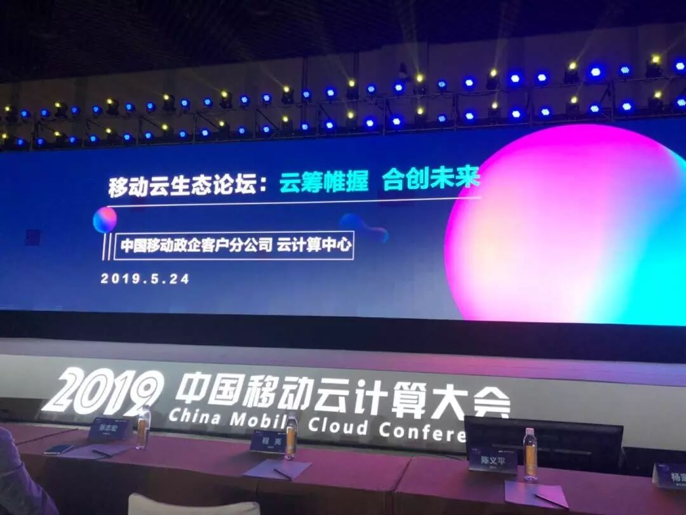
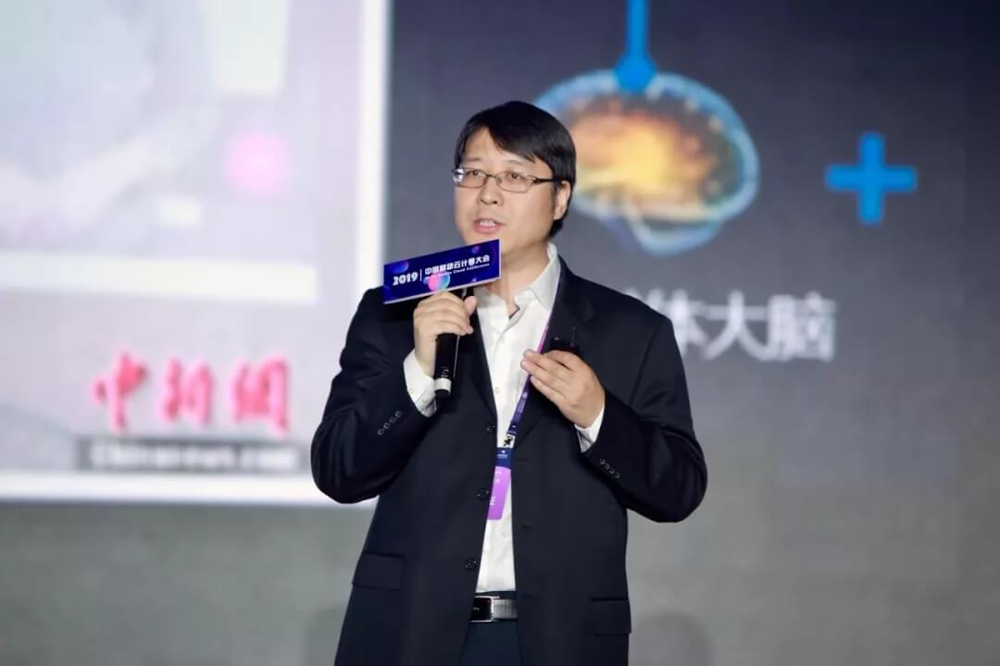
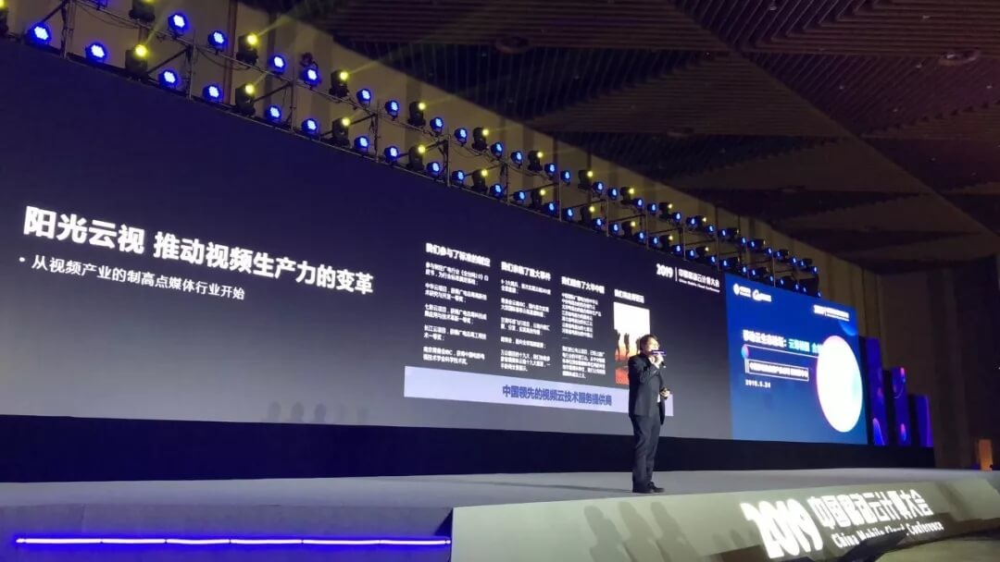
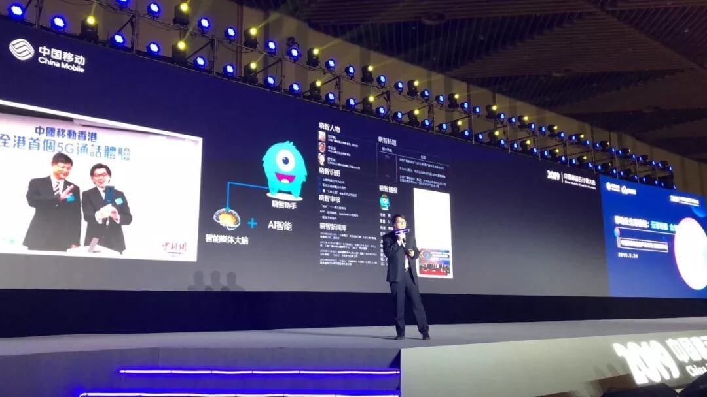
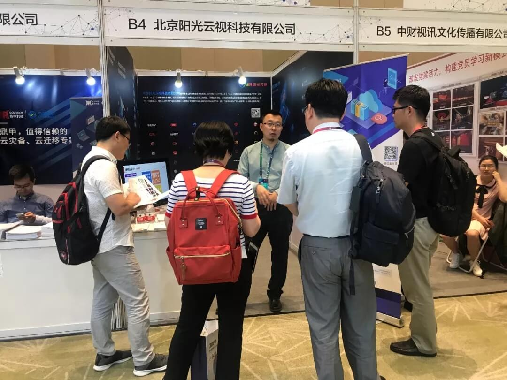
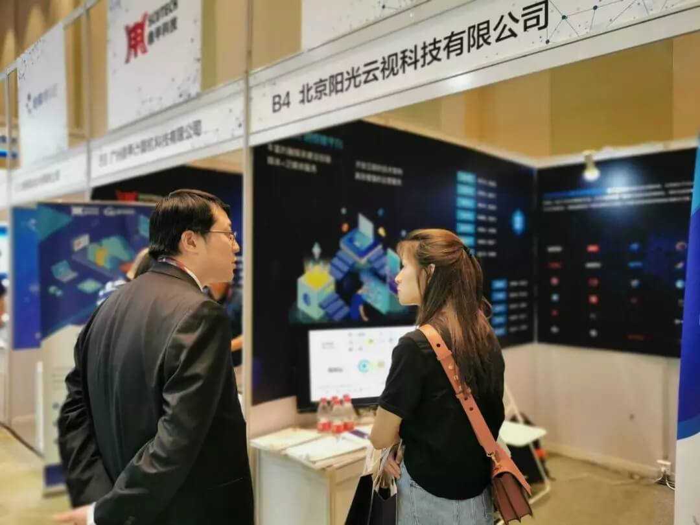

ONAIR阳光云视亮相苏州|助力中国移动“云启智能未来”！
5月24日，阳光云视受邀出席在苏州举行的2019中国移动云计算大会，大会以”云启智能未来”为主题，从运营商生态视角出发，切实推动中国移动云计算生态圈发展，依托中国移动广泛的运营生态，深化开拓垂直行业市场。

阳光云视一直以来本着开放的心态，与中国移动、华为云等多家上下游企业达成合作，进一步将视频云服务能力赋能，助力各个生态场景应用实现。此次活动，阳光云视携ONAIR媒体云及视频云产品服务火热出展，并在大会上以《做智慧媒体的行动派》为主题的演讲，

解决方案中心总经理周亮演讲

以《做智慧媒体的行动派》为题，带来精彩演讲
智能赋能媒体，建立智慧生态


ONAIR媒体云平台基于多年技术经验，针对具体使用场景和业务流程做产品研发，让平台从内容采集到汇聚再到发布全流程整合，做真正的融合媒体平台。 智能化的平台属性是符合当下媒体融合要求的又一特征，融合无处不在，融合无时不在，融合无界不在。所以，智能化是ONAIR融媒体平台的突出特点，基于最先进AI技术推出的“晓智”助手，通过新闻知识库、看图识文、智能审稿等多种功能，大大满足了建设“四全媒体”要求。
智能赋能企业，延伸智慧生态

ONAIR阳光云视基于智能化、专业化的视频云技术，结合企业实际应用场景，推出了ONAIR视频云系列产品，包括企业直播、点播、知识库建设、互动课堂等SaaS服务，同时对于平台能力开放API接口，多种服务满足企业视频化需求。

展会现场嘉宾对ONAIR媒体云系列产品和服务进行沟通了解

展会现场嘉宾对ONAIR媒体云系列产品和服务进行沟通了解
2019年，ONAIR云服务将继续秉承初心、不断创新，以实现视频生产能力的变革，让视频应用更轻松！